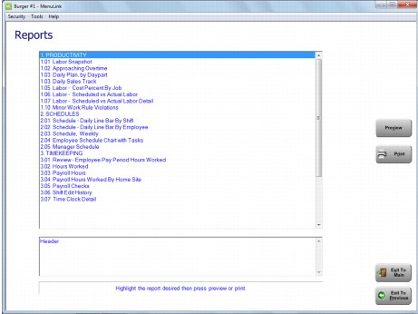
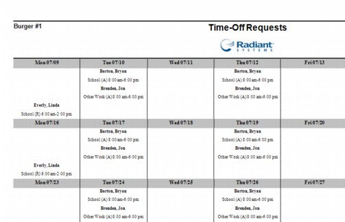
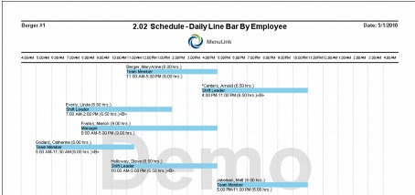
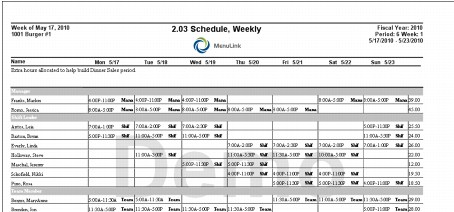
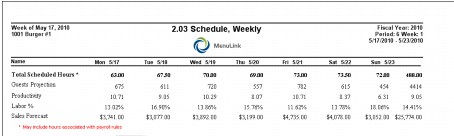
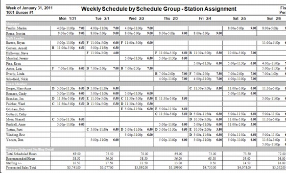
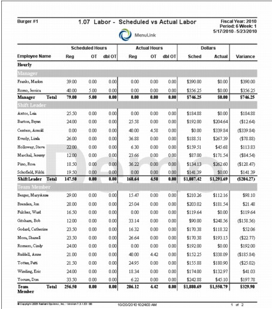

Scheduling Reports This section includes samples and descriptions of Scheduling-related reports available in MenuLink Client. Depending on your system set-up, you may not have access to all reports and selection options described. Contact your system administrator for more information. For general information on how to view and print reports, as well as selecting report options, see Viewing and Printing Reports. You can access Scheduling reports from the Reports button on the Scheduling Screen (Scheduling reports only, as shown in the screen example below) or from the Reports button on the Labor Screen (all Labor reports).  Time-Off Requests The Time-Off Requests report displays in a calendar view the employee name, date of request, type of request and the status of the request – requested or approved.  Daily Line Bar by Employee Report The Daily Line Bar by Employee report gives a daily view of the schedule. It shows the employee’s name, shift, scheduled hours and Job name.  Weekly Schedule by Job Title Report The Weekly Schedule by Job Title report shows a weekly view of the schedule sorted by job, with daily totals at the end of the report.   Weekly Schedule by Schedule Group – Station Assignment The Weekly Schedule by Schedule Group – Station Assignment displays the weekly schedule by schedule group and staffing detail. The station assignments are listed by the first initial of the station name within the employee’s scheduled hours.  Labor- Scheduled vs. Actual The Labor- Schedules vs. Actual report compares the hours scheduled to the actual hours worked, sorted by job code. 